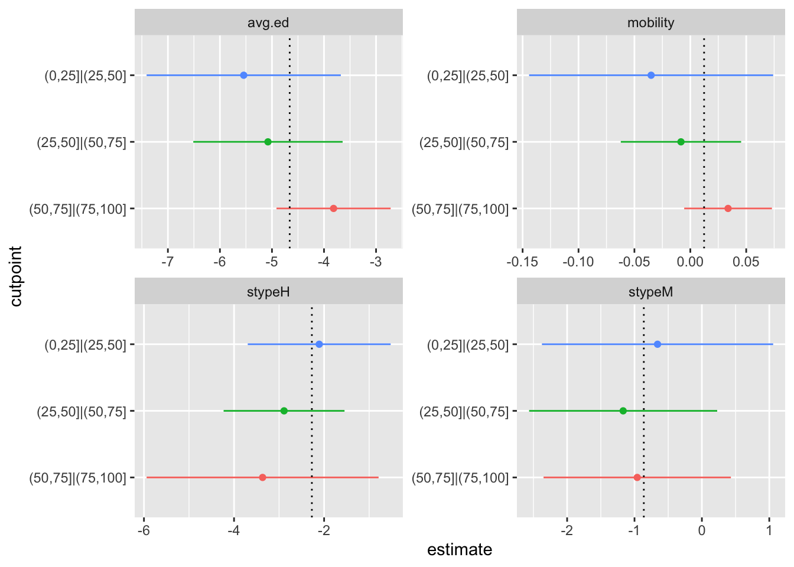

The proportional odds model is a generalisation of the logistic model. If you have a \(K\)-level ordered factor, you could dichotomise it in \(K-1\) different places, and get \(K-1\) logistic regression models. The intercepts of these models have to be different, but the slopes could (in principle) be the same or same-ish. That’s the proportional odds model \[\mathrm{logit}\, P(Y>k)=\alpha_k+\beta X\] It’s quite attractive as a generative model for ordinal data; it enforces stochastic ordering and has lots of choices for link functions. It’s also a reasonable model for analysing ordinal data; you’d think the \(\beta\) will be some sort of appropriately-weighted average of what you’d get for the separate logistic regressions1
If you fit this model, people will ask you if you tested the proportional odds assumption. As usual, testing is not actually all that helpful: in small samples you might not have useful power against important departures, in large samples you will reject for unimportant departures. Also, omnidirectional goodness-of-fit tests don’t tell you where to look for improvements.
You’d typically prefer to embed the model in one where the \(\beta\) can be different for different \(k\). That’s actually a bit of a pain. The model that has separate \(\beta_k\) will produce negative fitted probabilities for large enough \(X\). It’s not impossible to find a larger model, but fitting it won’t be all that easy. For this reason, tests are reasonably popular. One such test is due to Rollin Brant. Its starting point is to fit the \(K-1\) separate logistic regressions. These then get combined in various ways to give tests. There’s an omnidirectional test with \((K-2)P\) degrees of freedom (where \(P\) is the number of \(X\)s). Brant noted that this wasn’t actually much use:
The above test suffers from two defects common to many omnibus goodness-of-fit procedures. First, if either of \(k\) or \(p\) is large, the degrees of freedom above will be such that one cannot expect the test to be very powerful. Second, even if the test is sufficiently powerful to detect departures from proportionality, inspection of the individual components of the test statistic (i.e., the differences \(\tilde\beta_j-\tilde\beta_l\)) may provide no clear indication as to the nature of the discrepancy detected
To get around this problem, he proposed a test that looks for the same deviation from equality across all the coefficients: if we write \(\beta_{kp}\) for the coefficient of variable \(p\) in the logistic model at cutpoint \(k\), we’re looking for \[\beta_{kp}=\phi_k\beta_p.\] The particular form has two motivations, in terms of link misspecification and from what’s called a stereotype model. The score test for \(\beta_{kp}=\phi_k\beta_p\) vs \(\beta_{kp}=\beta_p\) involves a linear combination of the \(\hat\beta_{kp}\) and so it’s all just linear algebra.
Sadly, the Brant test as implemented tends to be the omnidirectional test that Brant didn’t want: it’s in Stata, in the brant package for R, and it or something with the same degrees of freedom is in SAS. It gets augmented by reporting the per-predictor tests with \(K-2\) degrees of freedom that are components of the omnidirectional test.
I like the idea of starting off with the separate logistic regressions, but I’d rather have a visual display as the primary output. A visual display is also easier to extend to complex survey data, which is the reason I was looking at the question.
Let’s start out with a design. I’m going to use a simple random sample that’s built in to the survey package, because the results will be roughly comparable to the original model-based analysis
library(survey)## Loading required package: grid## Loading required package: Matrix## Loading required package: survival##
## Attaching package: 'survey'## The following object is masked from 'package:graphics':
##
## dotchartdata(api)
the_design<-svydesign(id=~1, weights=~pw, data=apisrs)
the_design<-update(the_design, mealcat = cut(meals, c(0, 25, 50, 75, 100)))
formula<-mealcat~avg.ed + mobility + stype
m1<-svyolr(formula, design = the_design)
m1## Call:
## svyolr(formula, design = the_design)
##
## Coefficients:
## avg.ed mobility stypeH stypeM
## -4.65912984 0.01233333 -2.27177297 -0.86182115
##
## Intercepts:
## (0,25]|(25,50] (25,50]|(50,75] (50,75]|(75,100]
## -15.51044 -12.88261 -10.33571We’ll need \(K\) and \(P\)
K<-length(m1$lev)
P<-length(m1$coef)The next step is to fit the separate logistic models (easy!) and find the big covariance matrix of all the \(\hat\beta\)s (slightly less easy). Fortunately, past me has added a feature to many survey package functions to make them return their influence functions, which allows the covariance matrix to be computed
get_infl<-function(k,formula,design){
y<-formula[[2]]
formula[[2]]<-bquote(I(as.numeric(.(y))>.(k)))
mk<-svyglm(formula, design, family=quasibinomial, influence=TRUE)
list(coef(mk), attr(mk,"influence"))
}
fits<-lapply(1:(K-1), function(k) get_infl(k, formula, the_design))
infs<-do.call(cbind, lapply(fits, "[[",2))
combined_V<- vcov(svytotal(infs/weights(the_design), the_design))I don’t actually want the variances for the visualisation; I want the conditional variances. That is, the \(\hat\beta_{kp}\) for the same \(p\) and different \(k\) may be correlated, and I want to take that uncertainty out when comparing them. The conditional variances are the reciprocals of the diagonal elements of the inverse of the covariance matrix, and I compute them for the \((K-1)\times (K-1)\) covariance matrices corresponding to each variable.
conditional_V<- lapply(1:P,
function(p) 1/diag(solve(combined_V[c(p+1+(0:(K-2))*(P+1)), c(p+1+(0:(K-2))*(P+1))])))
coefs<-lapply(fits,"[[",1)Now some graphics. I need to construct a data frame that will be fed to ggplot
library(forcats)
library(ggplot2)
res<-data.frame(variable=rep(names(coefs[[1]])[-1],each=K-1),
cutpoint=fct_rev(rep(names(m1$zeta),P)),
estimate=as.vector(do.call(rbind,coefs)[,-1]),
se=sqrt(do.call(c, conditional_V)))
res$lower=res$estimate-1.96*res$se
res$upper=res$estimate+1.96*res$se
p<-ggplot(res,aes(y=cutpoint,col=cutpoint))+
geom_point(aes(x=estimate))+
geom_linerange(aes(xmin=lower,xmax=upper))+
facet_wrap(~variable,scales="free")+
theme(legend.position="none")+
geom_vline(aes(xintercept=z),linetype="dotted",
data.frame(z=m1$coef,variable=names(coefs[[1]])[-1]))
print(p)
For each variable \(p\), there’s a panel showing the confidence interval of each \(\beta_{kp}\) as a forestplot. The vertical dotted lines show the estimates from the proportional odds model. The scales are different for each panel, because there’s no meaningful relationship between the scale of each variable. If you were the sort of person who liked standardised regression coefficients you might go for a fixed scale instead. Using the conditional variances makes the estimates behave as if they were independent; you can, for example, look at whether the point estimate for one \(k\) is in the uncertainty interval for a different \(k\). These graphs make sense even under complex sampling, because we’re estimating population parameters (or trying to). If the model is a good fit in the population, the estimates \(\hat\beta_{kp}\) should estimate the population \(\beta_p\) and the intervals describe the uncertainty.
In this example, there doesn’t seem to be a lot going on. Maybe the first variable looks a bit weird, but I wouldn’t worry that much.
Ok, so can we do the tests? Sure, if you like. We have the covariance matrices.
To do the test that Brant recommended, follow the linear algebra in the paper
D<-diag(P)
for(k in 2:(K-1)){
D<-rbind(D,diag(P))
}
D<-cbind(D,matrix(0,nrow=(P)*(K-1),ncol=(K-2)))
for (k in 1:(K-2)){
D[(P-1)*k+(1:(P)),P+k]<-coefs[[k+1]][-1]
}
B<-do.call(c,lapply(coefs, "[",-1))
VarB<-(combined_V[-(1+(0:(K-2))*(P+1)),-(1+(0:(K-2))*(P+1))])
VarBinv<-solve(VarB)
deltahat<- solve(t(D)%*%VarBinv%*%D, t(D)%*%VarBinv%*%B)
VarDelta<-solve(t(D)%*%VarBinv%*%D)
i<-P+(1:(K-2))
brantTest<-deltahat[i]%*%solve(VarDelta[i,i])%*%deltahat[i]
brantTest## [,1]
## [1,] 3.323459pchisq(brantTest,df=(K-2),lower.tail=FALSE)## [,1]
## [1,] 0.1898104Robustly unexciting!
And now, the omnidirectional test that Brant didn’t recommend but gets blamed for
D<-cbind(1,-diag(K-2))%x%diag(P)
DB<-D%*%B
bigTest<-t(DB)%*%solve(D%*%VarB%*%t(D))%*%DB
bigTest## [,1]
## [1,] 7.400618pchisq(bigTest,df=(K-2)*P,lower.tail=FALSE)## [,1]
## [1,] 0.4940887Also not very interesting. And, I think, clearly less useful than the visual diagnostic
The results don’t exactly match the brant package (which gets a test statistic of 8 rather than 7.4), but I think that’s down to the difference between model-based and design-based standard error estimates even under simple random sampling where they are both trying to estimate the same thing.
So, will this be in the survey package some day? I’m not all that enthuastic, but maybe.
It’s actually more complicated than this: the score test for \(\beta\) is the Wilcoxon/Mann-Whitney test, so horrible transitivity paradoxes are lurking if the model fits badly enough↩︎